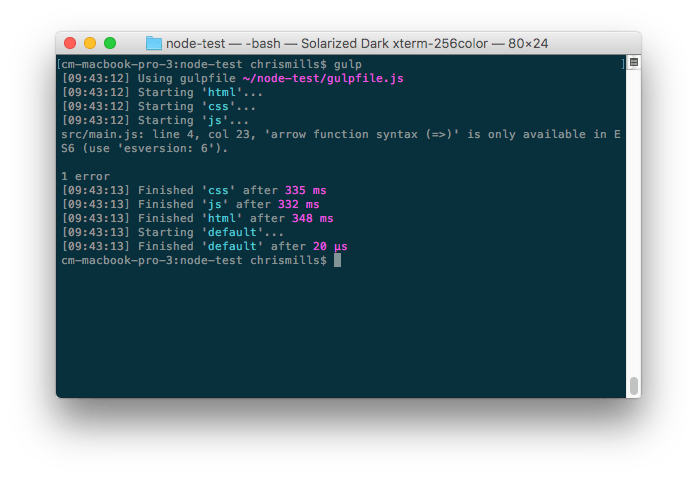
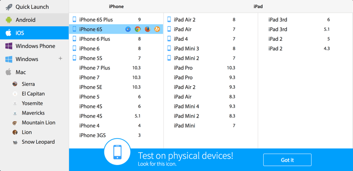
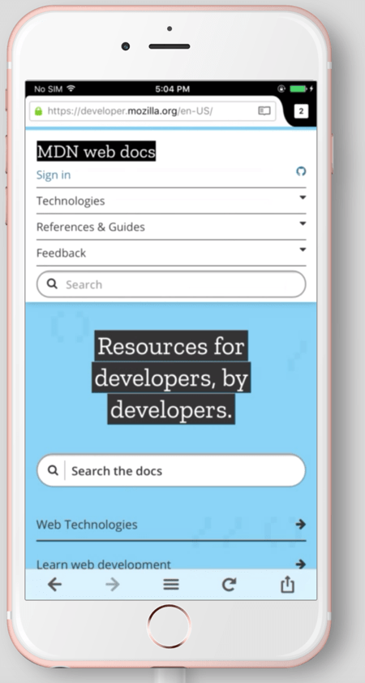
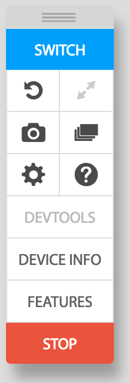

{{LearnSidebar}}{{PreviousMenuNext(“Learn/Tools_and_testing/Cross_browser_testing/Feature_detection”, “Learn/Tools_and_testing/Cross_browser_testing/Your_own_automation_environment”, “Learn/Tools_and_testing/Cross_browser_testing”)}}
Manually running tests on several browsers and devices, several times per day, can get tedious, and time-consuming. To handle this efficiently, you should become familiar with automation tools. In this article, we look at what is available, how to use task runners, and how to use the basics of commercial browser test automation apps such as LambdaTest, Sauce Labs, BrowserStack, and TestingBot.
| Prerequisites: | Familiarity with the core HTML, CSS, and JavaScript languages; an idea of the high level principles of cross-browser testing. |
|---|---|
| Objective: | To provide an understanding of what automated testing entails, how it can make your life easier, and how to make use of some of the commercial products that make things easier. |
Throughout this module we have detailed loads of different ways in which you can test your websites and apps, and explained the sort of scope your cross-browser testing efforts should have in terms of what browsers to test, accessibility considerations, and more. Sounds like a lot of work, doesn’t it?
We agree — testing all the things we’ve looked at in previous articles manually can be a real pain. Fortunately, there are tools to help us automate some of this pain away. There are two main ways in which we can automate the tests we’ve been talking about in this module:
We will look at how to set up your own Selenium-based testing system in the next article. In this article, we’ll look at how to set up a task runner, and use the basic functionality of commercial systems like the ones mentioned above.
Note: the above two categories are not mutually exclusive. It is possible to set up a task runner to access a service like Sauce Labs, or LambdaTest via an API, run cross browser tests, and return results. We will look at this below as well.
As we said above, you can drastically speed up common tasks such as linting and minifying code by using a task runner to run everything you need to run automatically at a certain point in your build process. For example, this could be every time you save a file, or at some other point. Inside this section we’ll look at how to automate task running with Node and Gulp, a beginner-friendly option.
Most tools these days are based on {{Glossary(“Node.js”)}}, so you’ll need to install it from nodejs.org:
Once the install completes, test that node is installed by typing the following into the terminal, which returns the installed versions of Node and npm:
If you’ve got Node/npm already installed, you should update them to their latest versions. To update Node, the most reliable way is to download and install an updated installer package from their website (see link above). To update npm, use the following command in your terminal:
Note: If the above command fails with permissions errors, Fixing npm permissions should sort you out.
To start using Node/npm-based packages on your projects, you need to set up your project directories as npm projects. This is easy to do.
For example, let’s first create a test directory to allow us to play without fear of breaking anything.
Create a new directory somewhere sensible using your file manager UI, or, on a command line, by navigating to the location you want and running the following command:
To make this directory an npm project, you just need to go inside your test directory and initialize it, with the following:
Once all the questions have been asked, it will ask you if the information entered is OK. type yes and press Enter/Return and npm will generate a package.json file in your directory.
This file is basically a config file for the project. You can customize it later, but for now it’ll look something like this:
{
"name": "node-test",
"version": "1.0.0",
"description": "Test for npm projects",
"main": "index.js",
"scripts": {
"test": "test"
},
"author": "Chris Mills",
"license": "MIT"
}With this, you are ready to move on.
Let’s look at setting up Gulp and using it to automate some testing tools.
src inside your project folder. You can try your own test content if you like, but bear in mind that such tools won’t work on internal JS/CSS — you need external files.First, install gulp globally (meaning, it will be available across all projects) using the following command:
Next, run the following command inside your npm project directory root to set up gulp as a dependency of your project:
Now create a new file inside your project directory called gulpfile.js. This is the file that will run all our tasks. Inside this file, put the following:
const gulp = require('gulp');
exports.default = function(cb) {
console.log('Gulp running');
cb();
};This requires the gulp module we installed earlier, and then exports a default task that does nothing except for printing a message to the terminal — this is useful for letting us know that Gulp is working. Each gulp task is exported in the same basic format — exports.taskName = taskFunction. Each function takes one parameter — a callback to run when the task is completed.
You can run your gulp’s default task with the following command — try this now:
To add some real tasks to Gulp, we need to think about what we want to do. A reasonable set of basic functionalities to run on our project is as follows:
See the links above for full instructions on the different gulp packages we are using.
To use each plugin, you need to first install it via npm, then require any dependencies at the top of the gulpfile.js file, then add your test(s) to the bottom of it, and finally export the name of your task to be available via gulp’s command.
Install using the following line:
Note:
--save-devadds the package as a dependency to your project. If you look in your project’spackage.jsonfile, you’ll see an entry for it in thedevDependenciesproperty.
Add the following dependency to gulpfile.js:
Add the following test to the bottom of gulpfile.js:
Export the html task using:
Change the default export to:
Here we are grabbing our development index.html file with gulp.src(), which allows us to grab a source file to do something with.
We next use the pipe() function to pass that source to another command to do something else with. We can chain as many of these together as we want. We first run htmltidy() on the source, which goes through and fixes errors in our file. The second pipe() function writes the output HTML file to the build directory.
In the input version of the file, you may have noticed that we put an empty {{htmlelement(“p”)}} element; htmltidy has removed this by the time the output file has been created.
Install using the following lines:
Add the following dependencies to gulpfile.js:
Add the following test to the bottom of gulpfile.js:
Add the following property to package.json:
Add this line after the const definitions:
Export the css task using:
Change the default task to:
Here we grab our style.css file, run csslint on it (which outputs a list of any errors in your CSS to the terminal), then runs it through autoprefixer to add any prefixes needed to make nascent CSS features run in older browsers. At the end of the pipe chain, we output our modified prefixed CSS to the build directory. Note that this only works if csslint doesn’t find any errors — try removing a curly brace from your CSS file and re-running gulp to see what output you get!
Install using the following lines:
Add the following dependencies to gulpfile.js:
Add the following test to the bottom of gulpfile.js:
Export the js task using:
Change the default task to:
Here we grab our main.js file, run jshint on it and output the results to the terminal using jshint.reporter; we then pass the file to babel, which converts it to old style syntax and outputs the result into the build directory. Our original code included a fat arrow function, which babel has modified into an old style function.
Once this is all set up, you can run the gulp command inside your project directory, and you should get an output like this:

You can then try out the files output by your automated tasks by looking at them inside the build directory, and loading build/index.html in your web browser.
If you get errors, check that you’ve added all the dependencies and the tests as shown above; also try commenting out the HTML/CSS/JavaScript code sections and then rerunning gulp to see if you can isolate what the problem is.
Gulp comes with a watch() function that you can use to watch your files and run tests whenever you save a file. For example, try adding the following to the bottom of your gulpfile.js:
function watch() {
gulp.watch('src/*.html', html)
gulp.watch('src/*.css', css)
gulp.watch('src/*.js', js)
}
exports.watch = watch;Now try entering the gulp watch command into your terminal. Gulp will now watch your directory, and run the appropriate tasks whenever you save a change to an HTML, CSS, or JavaScript file.
Note: The
*character is a wildcard character — here we’re saying "run these tasks when any files of these types are saved. You could also use wildcards in your main tasks, for examplegulp.src('src/*.css')would grab all your CSS files and then run piped tasks on them.
There’s a lot more you can do with Gulp. The Gulp plugin directory has literally thousands of plugins to search through.
There are many other task runners available. We certainly aren’t trying to say that Gulp is the best solution out there, but it works for us and it is fairly accessible to beginners. You could also try using other solutions:
package.json file, without needing to install any kind of extra task runner system. This works on the premise that things like Gulp plugins are basically wrappers around command line tools. So, if you can work out how to run the tools using the command line, you can then run them using npm scripts. It is a bit trickier to work with, but can be rewarding for those who are strong with their command line skills.Why npm scripts? provides a good introduction with a good deal of further information.Now let’s look at commercial third-party browser testing services and what they can do for us.
The basic premise with such applications is that the company that runs each one has a huge server farm that can run many different tests. When you use this service, you provide a URL of the page you want to test along with information, such as what browsers you want it tested in. The app then configures a new VM with the OS and browser you specified, and returns the test results in the form of screenshots, videos, logfiles, text, etc.
You can then step up a gear, using an API to access functionality programmatically, which means that such apps can be combined with task runners, such as your own local Selenium environments and others, to create automated tests.
Note: There are other commercial browser testing systems available but in this article, we’ll focus on LambdaTest, Sauce Labs, and BrowserStack. We’re not saying that these are necessarily the best tools available, but they are good ones that are simple for beginners to get up and running with.
Note: Unlike other cloud-based cross browser testing service providers, LambdaTest offers a freemium account where you get lifetime access to their platform. The only difference between their premium and their freemium plan is on the amount of consumption. For automation testing through their Selenium Grid, LambdaTest offers 60 minutes per month of free testing.
Once you sign in to LambdaTest, you will be routed to the LambdaTest Dashboard. The dashboard will provide you details related to how many minutes you have consumed, how many concurrent sessions are running, your total number of tests to date, and more.
Note: All the videos and images captured inside a test session are captured inside the gallery, test logs, and issue tracker at LambdaTest.
Let’s get started with a Sauce Labs Trial.
The Sauce Labs dashboard has a lot of options available on it. For now, make sure you are on the Manual Tests tab.
From here you can see the layout as it would look in the browser you are testing, move the mouse around and try clicking buttons, etc. The top menu allows you to:
Once you stop the session, you’ll return to the Manual Tests tab, where you’ll see an entry for each of the previous manual sessions you started. Clicking on one of these entries shows more data for the session. In here you can download any screenshots you took, watch a video of the session, view data logs, and more.
Note: This is already very useful, and way more convenient than having to set up all these emulators and virtual machines by yourself.
Sauce Labs has a restful API that allows you to programmatically retrieve details of your account and existing tests, and annotate tests with further details, such as their pass/fail state which isn’t recordable by manual testing alone. For example, you might want to run one of your own Selenium tests remotely using Sauce Labs to test a certain browser/OS combination, and then pass the test results back to Sauce Labs.
It has several clients available to allow you to make calls to the API using your favourite environment, be it PHP, Java, Node.js, etc.
Let’s have a brief look at how we’d access the API using Node.js and node-saucelabs.
sauce-test for example.Install the Node Sauce Labs wrapper using the following command:
npm install saucelabsCreate a new file inside your project root called call_sauce.js. give it the following contents:
const SauceLabs = require('saucelabs');
let myAccount = new SauceLabs({
username: "your-sauce-username",
password: "your-sauce-api-key"
});
myAccount.getAccountDetails(function (err, res) {
console.log(res);
myAccount.getServiceStatus(function (err, res) {
// Status of the Sauce Labs services
console.log(res);
myAccount.getJobs(function (err, jobs) {
// Get a list of all your jobs
for (let k in jobs) {
if ( jobs.hasOwnProperty( k )) {
myAccount.showJob(jobs[k].id, function (err, res) {
let str = res.id + ": Status: " + res.status;
if (res.error) {
str += "\033[31m Error: " + res.error + " \033[0m";
}
console.log(str);
});
}
}
});
});
});Make sure everything is saved, and run your file like so:
We’ll cover actually running automated Sauce Lab tests in the next article.
Let’s get started with a BrowserStack Trial.
The BrowserStack Live dashboard allows you to choose what device and browser you want to test on — Platforms in the left column, devices on the right. When you mouse over or click on each device, you get a choice of browsers available on that device.

Clicking on one of those browser icons will load up your choice of platform/device/browser — choose one now, and give it a try.

Note: The blue device icon next to some of the mobile device choices signals that you will be testing on a real device; choices without that icon will be run on an emulator.
You’ll find that you can enter URLs into the address bar, and use the other controls like you’d expect on a real device. You can even do things like copy and paste from the device to your clipboard, scroll up and down by dragging with the mouse, or use appropriate gestures (e.g. pinch/zoom, two fingers to scroll) on the touchpads of supporting devices (e.g. MacBook). Note that not all features are available on all devices.
You’ll also see a menu that allows you to control the session.

The features here are as follows:
Note: This is already very useful, and way more convenient than having to set up all these emulators and virtual machines by yourself.
If you go back to the main BrowserStack page, you’ll find a couple of other useful basic features under the More menu option:
BrowserStack also has a restful API that allows you to programmatically retrieve details of your account plan, sessions, builds, etc.
It has several clients available to allow you to make calls to the API using your favourite environment, be it PHP, Java, Node.js, etc.
Let’s have a brief look at how we’d access the API using Node.js.
bstack-test for example.Create a new file inside your project root called call_bstack.js. give it the following contents:
const request = require("request");
let bsUser = "BROWSERSTACK_USERNAME";
let bsKey = "BROWSERSTACK_ACCESS_KEY";
let baseUrl = "https://" + bsUser + ":" + bsKey + "@www.browserstack.com/automate/";
function getPlanDetails(){
request({uri: baseUrl + "plan.json"}, function(err, res, body){
console.log(JSON.parse(body));
});
/* Response:
{
automate_plan: <string>,
parallel_sessions_running: <int>,
team_parallel_sessions_max_allowed: <int>,
parallel_sessions_max_allowed: <int>,
queued_sessions: <int>,
queued_sessions_max_allowed: <int>
}
*/
}
getPlanDetails();Make sure everything is saved, and run your file like so:
Below we’ve also provided some other ready-made functions you might find useful when working with the BrowserStack restful API.
function getBuilds(){
request({uri: baseUrl + "builds.json"}, function(err, res, body){
console.log(JSON.parse(body));
});
/* Response:
[
{
automation_build: {
name: <string>,
duration: <int>,
status: <string>,
hashed_id: <string>
}
},
{
automation_build: {
name: <string>,
duration: <int>,
status: <string>,
hashed_id: <string>
}
},
...
]
*/
};
function getSessionsInBuild(build){
let buildId = build.automation_build.hashed_id;
request({uri: baseUrl + "builds/" + buildId + "/sessions.json"}, function(err, res, body){
console.log(JSON.parse(body));
});
/* Response:
[
{
automation_session: {
name: <string>,
duration: <int>,
os: <string>,
os_version: <string>,
browser_version: <string>,
browser: <string>,
device: <string>,
status: <string>,
hashed_id: <string>,
reason: <string>,
build_name: <string>,
project_name: <string>,
logs: <string>,
browser_url: <string>,
public_url: <string>,
video_url: <string>,
browser_console_logs_url: <string>,
har_logs_url: <string>
}
},
{
automation_session: {
name: <string>,
duration: <int>,
os: <string>,
os_version: <string>,
browser_version: <string>,
browser: <string>,
device: <string>,
status: <string>,
hashed_id: <string>,
reason: <string>,
build_name: <string>,
project_name: <string>,
logs: <string>,
browser_url: <string>,
public_url: <string>,
video_url: <string>,
browser_console_logs_url: <string>,
har_logs_url: <string>
}
},
...
]
*/
}
function getSessionDetails(session){
let sessionId = session.automation_session.hashed_id;
request({uri: baseUrl + "sessions/" + sessionId + ".json"}, function(err, res, body){
console.log(JSON.parse(body));
});
/* Response:
{
automation_session: {
name: <string>,
duration: <int>,
os: <string>,
os_version: <string>,
browser_version: <string>,
browser: <string>,
device: <string>,
status: <string>,
hashed_id: <string>,
reason: <string>,
build_name: <string>,
project_name: <string>,
logs: <string>,
browser_url: <string>,
public_url: <string>,
video_url: <string>,
browser_console_logs_url: <string>,
har_logs_url: <string>
}
}
*/
}We’ll cover actually running automated BrowserStack tests in the next article.
Let’s get started with a TestingBot Trial.
The TestingBot dashboard lists the various options you can choose from. For now, make sure you are on the Live Web Testing tab.
From here you can see the layout as it would look in the browser you are testing, move the mouse around and try clicking buttons, etc. The side menu allows you to:
Once you stop the session, you’ll return to the Live Web Testing page, where you’ll see an entry for each of the previous manual sessions you started. Clicking on one of these entries shows more data for the session. Here you can download any screenshots you took, watch a video of the test, and view logs for the session.
TestingBot has a restful API that allows you to programmatically retrieve details of your account and existing tests, and annotate tests with further details, such as their pass/fail state which isn’t recordable by manual testing alone.
TestingBot has several API clients you can use to interact with the API, including clients for NodeJS, Python, Ruby, Java and PHP.
Below is an example on how to interact with the TestingBot API with the NodeJS client testingbot-api.
tb-test for example.Install the Node TestingBot wrapper using the following command:
npm install testingbot-apiCreate a new file inside your project root called tb.js. give it the following contents:
Make sure everything is saved, and run the file:
We’ll cover actually running automated TestingBot tests in the next article.
This was quite a ride, but I’m sure you can start to see the benefits of using automation tools to do some of the heavy lifting in terms of testing.
In the next article, we’ll look at setting up our own local automation system using Selenium, and how to combine that with services such as Sauce Labs, BrowserStack and TestingBot.
{{PreviousMenuNext(“Learn/Tools_and_testing/Cross_browser_testing/Feature_detection”, “Learn/Tools_and_testing/Cross_browser_testing/Your_own_automation_environment”, “Learn/Tools_and_testing/Cross_browser_testing”)}}
{kind=link}